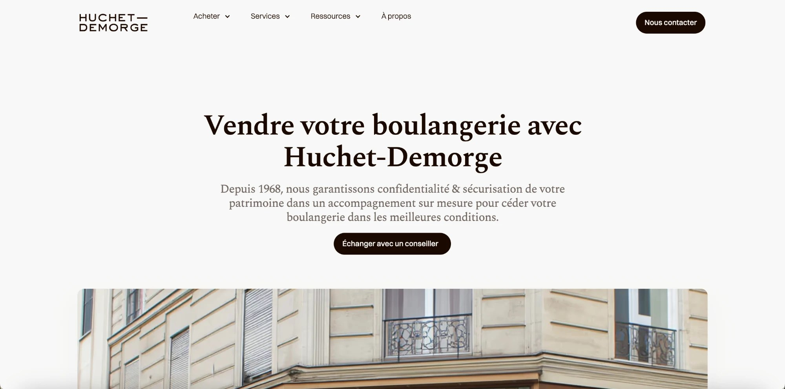
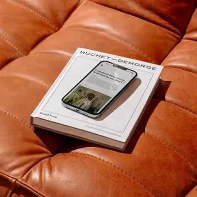
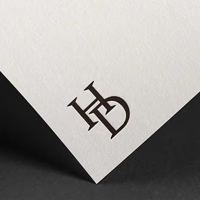
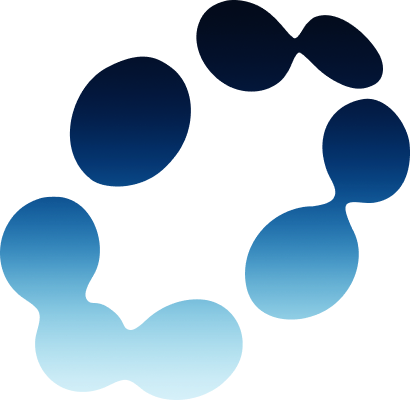

Préparé par Orem pour Hugo Demorge · Cabinet Huchet-Demorge
Proposition de suivi Évolution · 490 € HT / mois
Faire évoluer le site Huchet-Demorge,
mois après mois
01 · Le point de départ
Faire évoluer un système qui fonctionne déjà
Aujourd’hui, le site Huchet-Demorge fonctionne. La refonte a permis de remettre une base saine :
- le site a repris en qualité
- les signaux sont bons
- les demandes entrent
- l’ensemble est plus solide qu’avant
Le sujet n’est donc pas de « refaire ».
Le sujet, maintenant, c’est de faire évoluer intelligemment ce qui existe déjà pour que le site, les parcours, les supports et les outils restent alignés avec les enjeux du cabinet.


09 · Le contexte
Pourquoi ça a du sens pour Huchet-Demorge
Huchet-Demorge n’est pas dans une logique « site vitrine figé ». Le cabinet est sur :
- une audience exigeante
- des enjeux de crédibilité élevés
- des demandes réelles
- une visibilité déjà installée
- un site qui peut devenir un vrai levier d’optimisation continue
C’est précisément le bon contexte pour un suivi d’évolution :
- 01parce que la base existe déjà
- 02parce que les enjeux business sont réels
- 03et parce qu’il y a déjà des sujets concrets à traiter sans attendre une future refonte






11 · En une phrase
Nous ne laissons pas le site redevenir figé après sa mise en ligne.
Chaque mois, nous lisons les priorités avec vous, décidons quoi faire, l’exécutons et faisons évoluer ce qui doit l’être pour que l’outil reste au niveau de votre activité.